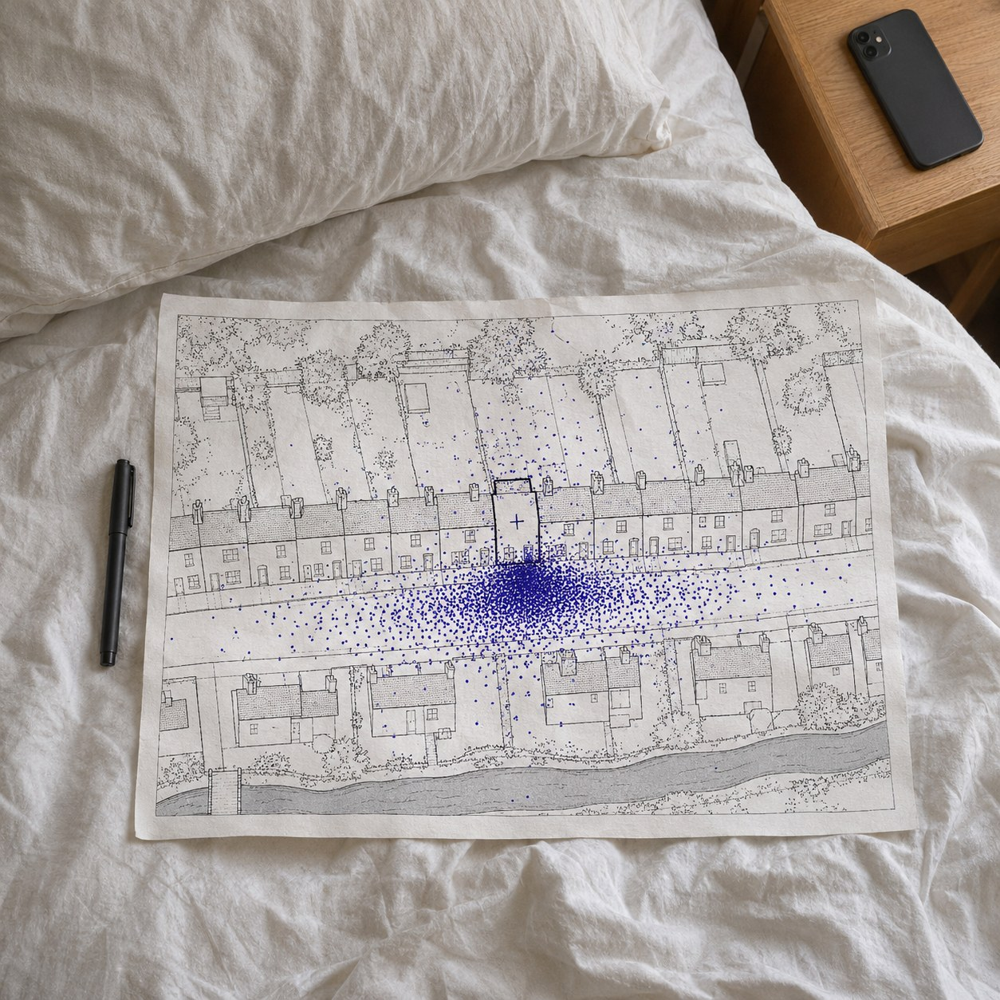
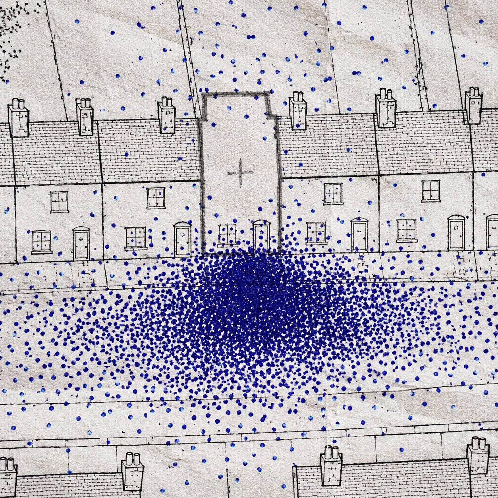

Stayed In


For a year of nights my phone lay on the table by my bed and wrote down, every few minutes, where it thought I was. I did not move. It did.
On a paper street map I put one dot of ink for every guess. Around the house they gather thick, but not on it. They spill into the back garden and the house next door, across the pavement and over the road, a few as far as the corner, one or two in the river at the bottom of the hill.
A phone does not know where it is. It listens through the roof for satellites it can barely hear, for the neighbours' wifi, for masts on distant hills, and makes its best guess. On the screen that guess is a blue dot inside a pale circle. The dot is what we look at. The circle is the honest part: somewhere in here, probably.
On Kawara traced on city maps the routes he took each day, so that every map was proof a day had been lived and moved through. This map is the opposite. Nights in which nothing went anywhere, drawn as a spray of travel.
Find the middle of all the dots and, by the machine's account, the place I spent most of my nights is the middle of the road outside.
I knew where I was. I never had to work it out. That kind of knowing has no evidence behind it at all, only the dark, the weight of the covers, a car passing on the other side of the wall. The phone has nothing but evidence, and so it is never more than probably right.
Every morning I woke in the same bed. On the map it is one of the emptiest places in the street.